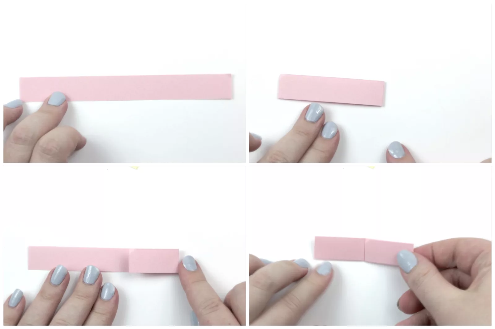
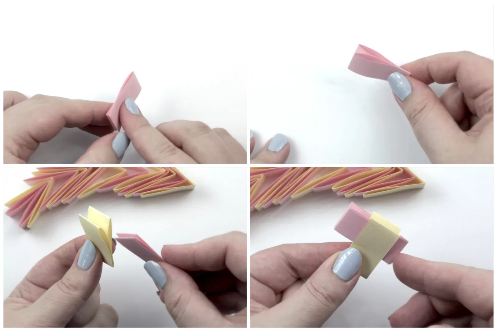
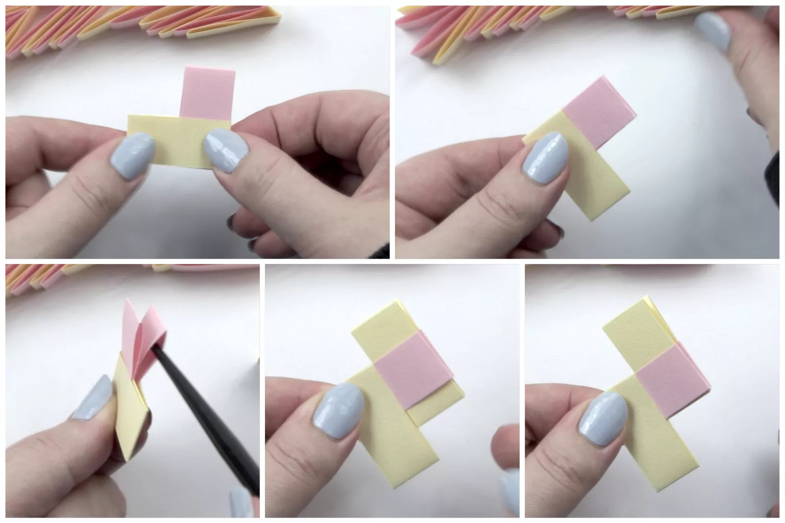
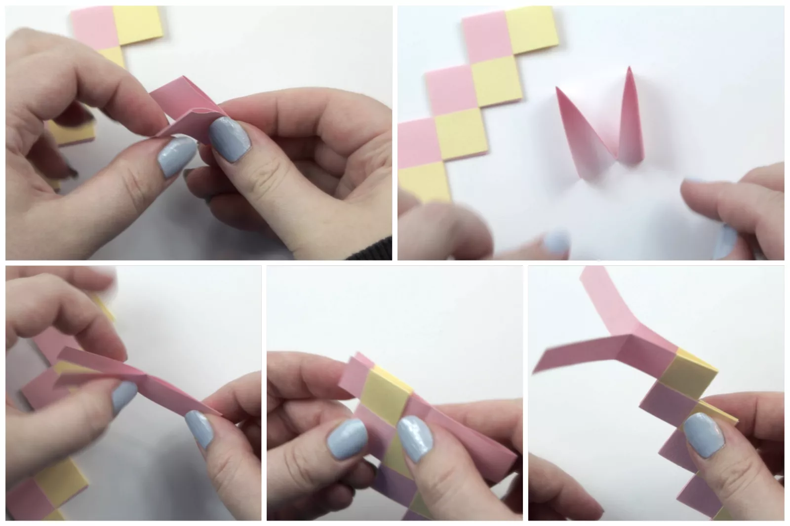
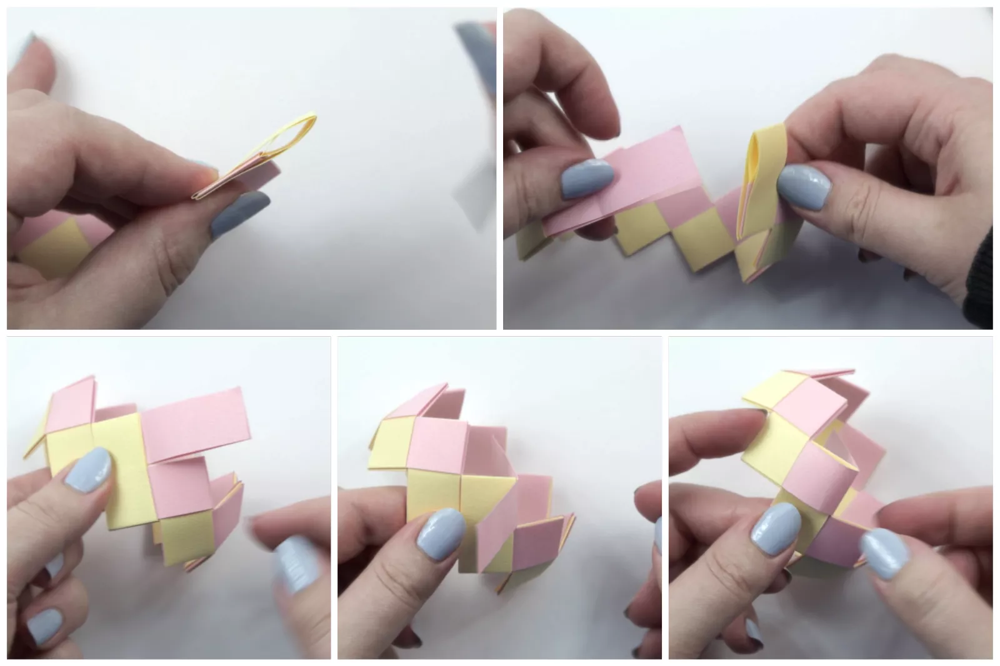

How to Make a Beautiful Origami Bracelet
Learn how to make a wonderful origami bracelet with these easy
to follow step by step instructions! This bracelet will be a truly unique gift!
Using thick paper or thin card for this origami bracelet is
recommended, there are many different types of paper that
you could use! Some examples are: wrapping paper, music sheet paper,
(cleaned) potato chip packets, magazines and so many more!
The size you'll need for this origami bracelet is 15 x 1.8 cm.
This size will get you a bold bangle. You can use smaller or
larger sizes to achieve different looks. Some example paper
sizes are: 10 x 1.2 cm and 20 x 2.4 cm. To find a particular size,
check out this useful origami paper ratio calculator.
01:Start Folding the Paper
Start with your strip of paper white side up.
Fold the paper in half, from right to left and then unfold.
Fold the right edge to the central crease that you just made.
Fold the left edge to the central crease.

02:Finish Folding, Then Start Inserting Units
Fold the paper in half again, from right to left.
Now you have your origami bracelet unit!
You'll need an even number of units, about 18 to 20 of them.
In the tutorial, two alternating colors are being used.
The yellow one is the first unit.
Hold the first unit in your non-predominant hand. The two loops
should be at the top. You can use a chopstick to open out
the loops if needed.
Get another unit and insert its two loops into the loops on the first unit.

03:Continue to Connect Units
Straighten them to look as shown. Flip the two
connected units over to the other side.
Open out the two loops of the second (pink) unit. Insert
the next unit. Now continue to do the same process on
the remaining units. (Flipping them over each time)
Flip the two connected units over to the other side. Open
out the two loops of the second (pink) unit.
Insert the next unit. Now continue to do the same process on
the remaining units, flipping them over each time.

04:Bring the Two Ends Together
Once you have gotten to the last unit, take it and open
it out. Re-fold it so that it is an M shape. The
colored side should be on the outside of the M.
Bring the two ends together. Insert the two ends
into the last unit you worked on.

05:Finish the Bracelet
Grab the other end of the bracelet. Open out the loop, the opening
should be in the middle, with the two inner layers being separated
as well. Put the two ends together through the open loop. Pull
them all the way through.
Fold the two ends away from each other. Insert the outer end into
the flap as shown, and do the same on the inside of the bracelet.
Now that you have a pretty origami bracelet, why not make a simple
masu box to keep it in, or give as a gift?


Our Purpose Is To Sustainably Make the Pleasure and Benefits of sports Accessible to the Many.
Copyright-2021 Abdul Haq